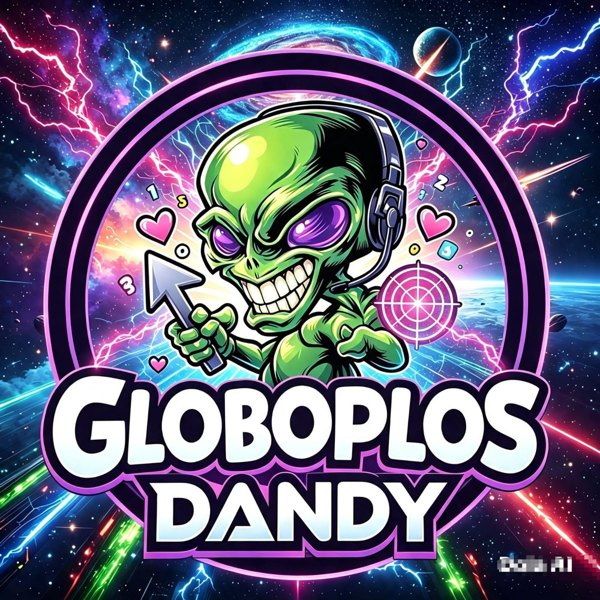
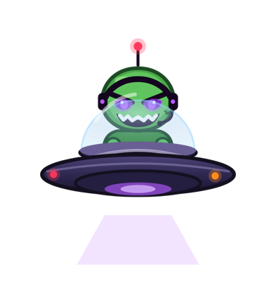

PROYECTO PRODUCTIVO · CJADS

Globoplos Dandy
«¡Explota globos, aprende matemáticas y diviértete!»
10niveles
5tierras
4jefes
∞maratón

La historia
Dandy Oscuro, el gemelo malvado, se robó el Castillo de los Globos. Ayuda a Dandy a cruzar 5 tierras resolviendo sumas, restas, multiplicaciones y divisiones.
Cómo se juega
- Lee la operación de arriba.
- Toca el globo con la respuesta correcta antes de que se acabe el tiempo.
- Haz rachas, atrapa poderes y vence a los jefes para llegar al castillo.
Instalar en Android
- Toca Descargar app para Android.
- Abre el archivo descargado GloboplosDandy.apk.
- Si el celular lo pide, permite “Instalar apps desconocidas” y toca Instalar.
En iPhone y computador, juega con el botón Jugar ahora: no hay que instalar nada.